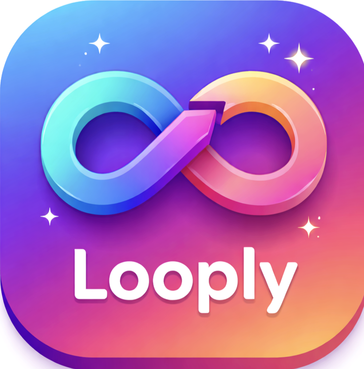
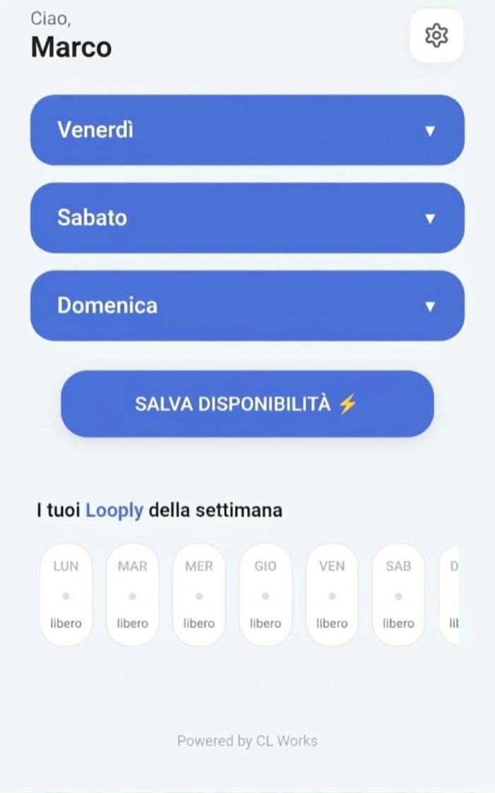
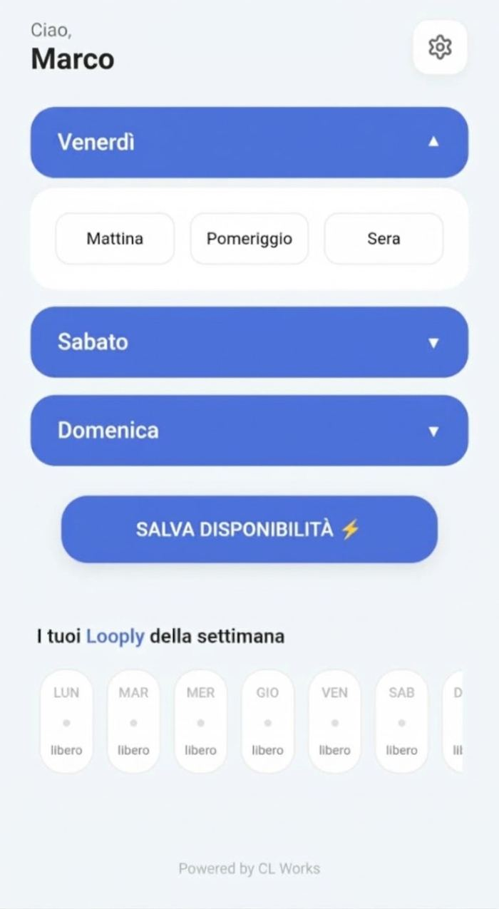
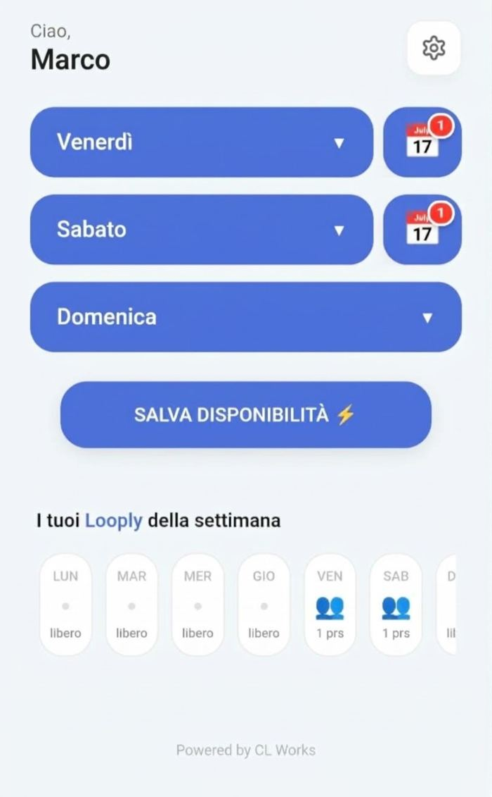
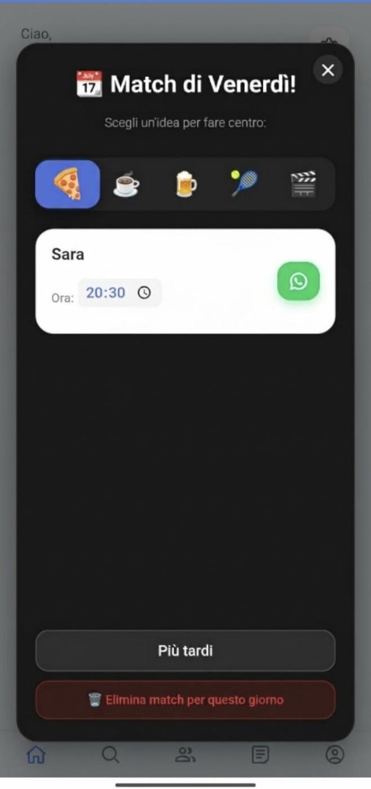
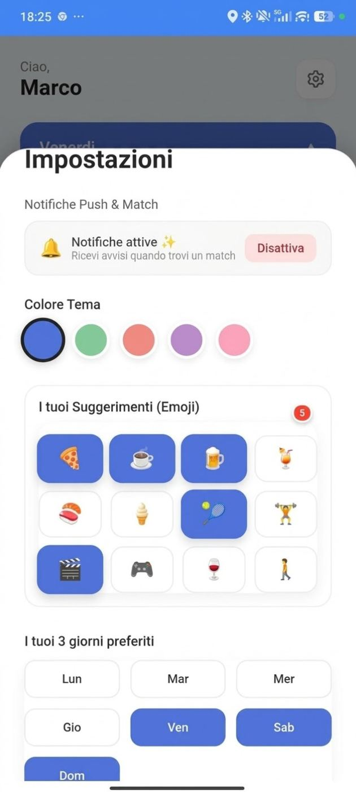

01
Scegli quando sei libero
Apri il giorno dalla dashboard e seleziona mattina, pomeriggio e/o sera. Poi premi “Salva disponibilità”.

Meno organizzazione, più spontaneità
Organizzare qualcosa con gli amici non è mai stato così semplice.
Durante la registrazione scegli i tuoi giorni preferiti. Puoi cambiarli quando vuoi dal menu Impostazioni.
Dalla dashboard aggiorni la disponibilità per mattina, pomeriggio e sera. Quando c’è una compatibilità con un amico, compare un’icona calendario accanto al giorno.
Imposta i tuoi giorni. Salva la disponibilità. Lascia a Looply il compito di trovare le occasioni.
Ciao! 👋
Scegli i momenti in cui sei libero.
«Quando ci vediamo?» non dovrebbe diventare una chat infinita.
Meno incastri.Semplice, come dovrebbe essere
Dalle preferenze iniziali al messaggio WhatsApp: pochi passaggi, senza chat infinite.
Apri il giorno dalla dashboard e seleziona mattina, pomeriggio e/o sera. Poi premi “Salva disponibilità”.
Quando tu e un amico avete disponibilità compatibili, l’icona calendario segnala il giorno del match. Tocca l’icona per aprire il riepilogo.
Nel popup trovi il nome dell’amico, i suggerimenti per l’uscita e l’orario. Tocca WhatsApp per aprire una chat con un messaggio già compilato.
Dentro Looply
Schermate reali: dalla disponibilità settimanale ai match con gli amici, fino alle impostazioni personali.





Le impostazioni seguono il tuo modo di vivere
Dal menu Impostazioni puoi cambiare il colore dell’interfaccia, personalizzare gli emoji suggeriti, scegliere i tuoi tre giorni preferiti e invitare amici. Le preferenze si possono aggiornare nel tempo.
LOOPLY · IL MODO SMART PER RITROVARSI
Scegli i tuoi giorni, aggiorna le disponibilità e trova il momento giusto per vedervi.